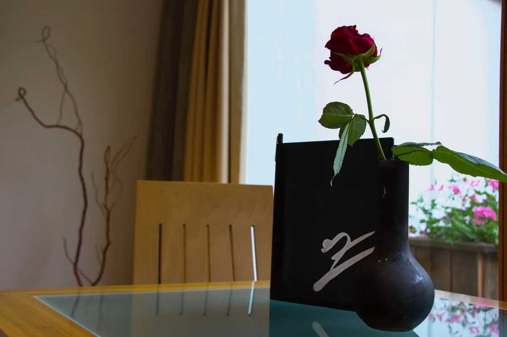
Das RotDer Pinselzug.
Das Zeichen des Hauses, ein roter Pinselzug. Rot steht genau einmal je Seite: im Zeichen, als Punkt oder als Strich unter dem wichtigsten Wort.
Die Hausregeln · Rot und Schnee
Suitenhotel Zurbriggen Schluhmattstrasse 68 3920 Zermatt
Alles, was das Suitenhotel erkennbar macht, an einem Ort: das Logo und der rote Pinselzug, die Farben und woher sie kommen, die Schriften, die ruhige Form, die Bilder, die Suiten und der Ton. Damit jedes neue Stück, ob Aushang, Brief in der Suite oder Beitrag, aussieht wie aus einem Guss.
01Haltung
Ein kleines Suitenhotel am Fuss des Matterhorns, im Dezember 1998 gebaut von Moni und Pirmin Zurbriggen, die es bis heute selbst führen. Das Haus ist aus Glas und einheimischem Lärchenholz, jede Suite hat einen Südbalkon. Die Gestaltung nimmt nur, was das Logo schon trägt: das Rot des Pinselzugs, das Anthrazit des Namens, das Silber von «ZERMATT», dazu den Schnee vor dem Haus.

Das Zeichen des Hauses, ein roter Pinselzug. Rot steht genau einmal je Seite: im Zeichen, als Punkt oder als Strich unter dem wichtigsten Wort.
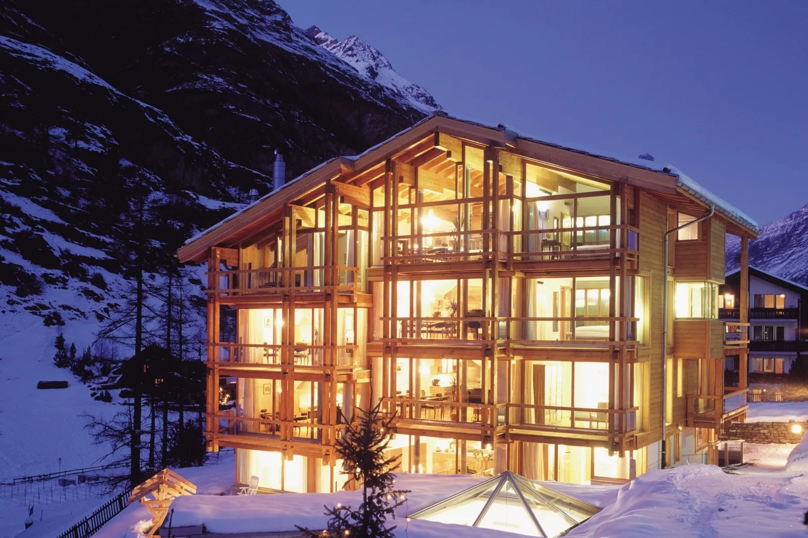
Das helle Weiss der Gestaltung ist dieser Schnee, getönt mit dem Silber des Logos. Nie reines Weiss auf Weiss.
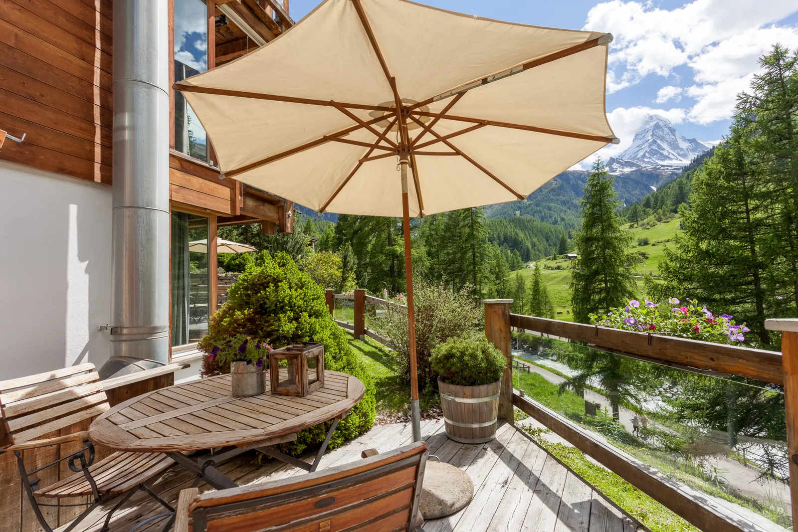
Vor jedem Südbalkon. Fels und Schnee in Grau und Weiss: die Stimmung, die das Silber des Logos aufnimmt.
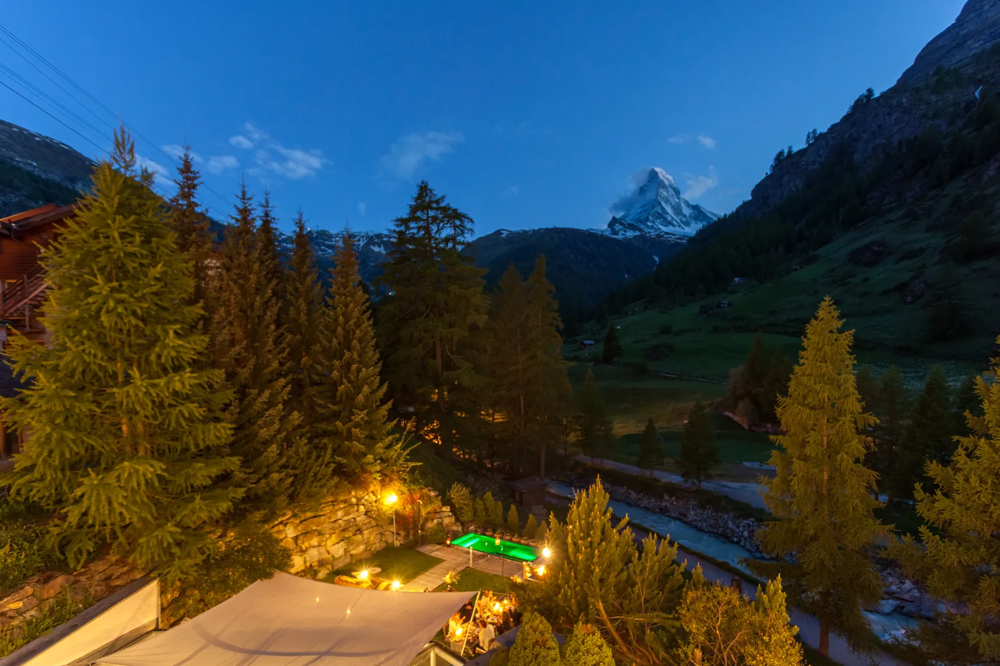
Willkommen zu Hause.
Der erste Satz auf der Website des Hauses.
02Zeichen
Das Logo ist eine Datei des Hauses: links der rote Pinselzug, daneben SUITENHOTEL, ZURBRIGGEN und ZERMATT in Anthrazit und Silber. Es wird eingesetzt, nie nachgezeichnet, nie neu gesetzt. Das Haus zeigt es in zwei Formen: am Rechner die Querform, am Handy die quadratische. Nachgezogen ist nur der Pinselzug, für das Zeichen allein.
Wo der Name schon daneben steht, in der Leiste, als Stempel oder im Reiter des Browsers, genügt der Pinselzug. In Rot als Hauptform, in Anthrazit oder Samtrot auf Schnee, in Silber oder Schnee auf Anthrazit.
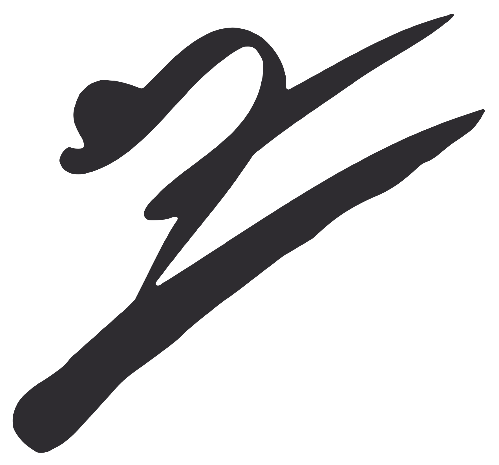
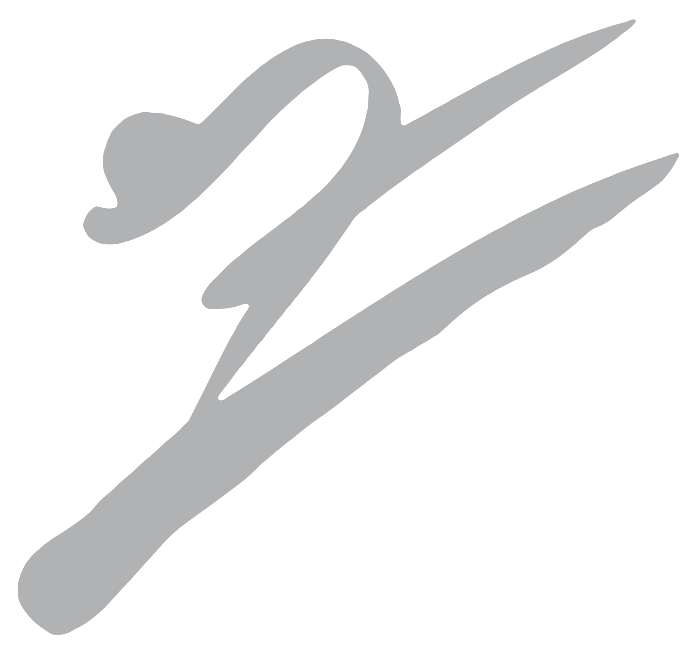
Rundum so viel Luft wie die Höhe des Wortes «ZURBRIGGEN». Kein Text, kein Bildrand, keine Linie näher.
Die Querform nie unter 150 Pixel Breite am Bildschirm, 35 Millimeter im Druck: darunter wird «SUITENHOTEL» unlesbar.
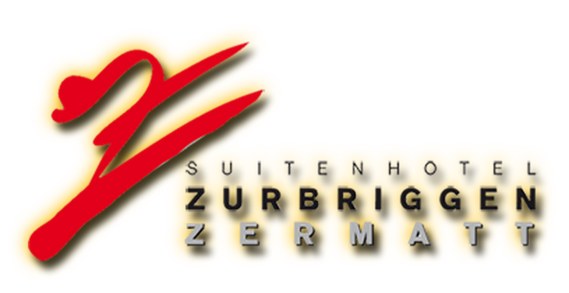
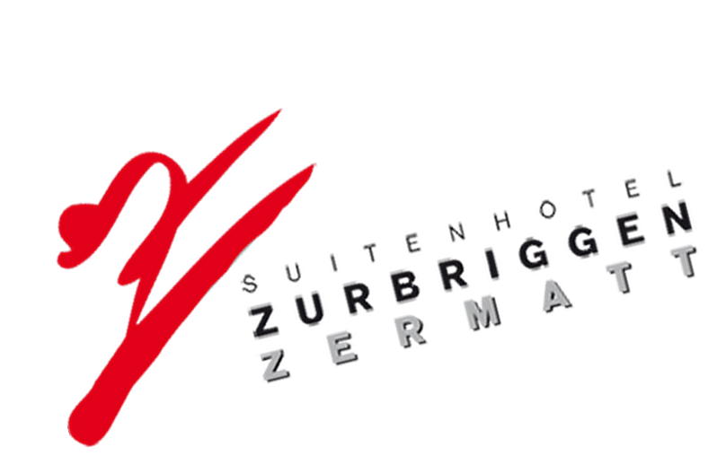
03Farben
Rot, Anthrazit und Silber kommen aus dem Logo, der Schnee aus dem Winterbild des Hauses, das Samtrot aus der Mediathek der Website. Schnee und Anthrazit tragen alles, Silber zieht die feinen Linien, das Rot des Pinselzugs ist der einzige Akzent. Ein Klick auf eine Farbe kopiert ihren Wert.
Die hellen Flächen, so hell wie der Neuschnee vor dem Haus. Getönter Schnee setzt eine zweite Fläche ab, nie Weiss auf Weiss.
#F7F6EC#E7E7E4Das Anthrazit des Namens im Logo. Es schreibt, es trägt die Knöpfe und die dunklen Flächen; Grau ist die leise zweite Zeile.
#2E2C30#1F1E22#6F6D73Silber wie «ZERMATT» im Logo zieht die feinen Linien. Lärche steht nur im Holz des Hauses, nie als Fläche der Gestaltung.
#B1B2B4#D6D7D9#B9824EDas Rot des Pinselzugs ist der einzige Akzent: ein Punkt, ein Unterstrich, die Ziellinie. Samtrot gibt nur Tiefe.
#E2001A#AA0615Rot ist ein Punkt und ein Strich. Das Zeichen, ein Unterstrich, eine Ziellinie. Nie eine Fläche, nie ein Knopf.
Knöpfe sind Anthrazit oder Schnee. Anthrazit mit hellem Rund für den Hauptweg, Schnee mit Silberlinie für jeden Nebenweg.
Nie Weiss auf Weiss. Eine zweite helle Fläche ist getönter Schnee; das Grün im Pool bleibt im Foto und wird nie eine Farbe der Gestaltung.
04Schrift
Titel stehen in Instrument Sans, gross und leicht, nie in Versalien. Gelesen wird in derselben Schrift. Etiketten, Knöpfe, Zeiten und Grössen stehen in DM Mono, klein, in Versalien und weit gesperrt, wie die Zeiten einer Rennliste. Bricolage Grotesque, breit und kräftig wie der Name im Logo, kommt nur für einzelne grosse Wörter.
Willkommen zu Hause.
Aa Bb Cc Dd Ee Ff Gg Hh Ii Jj Kk Ll Mm Nn Oo Pp Qq Rr Ss Tt Uu Vv Ww Xx Yy Zz Ää Öö Üü 0123456789
Sie stellen sich Ihr ganz individuelles Frühstück aus unseren lokalen, frischen Spezialitäten zusammen und wir servieren es zu der gewünschten Zeit in Ihrer Suite.
Check-in 14 bis 21 Uhr
Olympia145 m²Cry d’Er119 m²Matterhorn40 m²
ZERMATT
05Form
Die Flächen bleiben ruhig: kein Muster im Hintergrund, viel Schnee, feine Linien von einem Pixel in Silber, Ecken mit vier Pixel Radius. Betont wird mit einem roten Strich unter dem wichtigsten Wort. Knöpfe sind Anthrazit oder Schnee, mit einem hellen Rund und einem Pfeil, wie auf der Website.
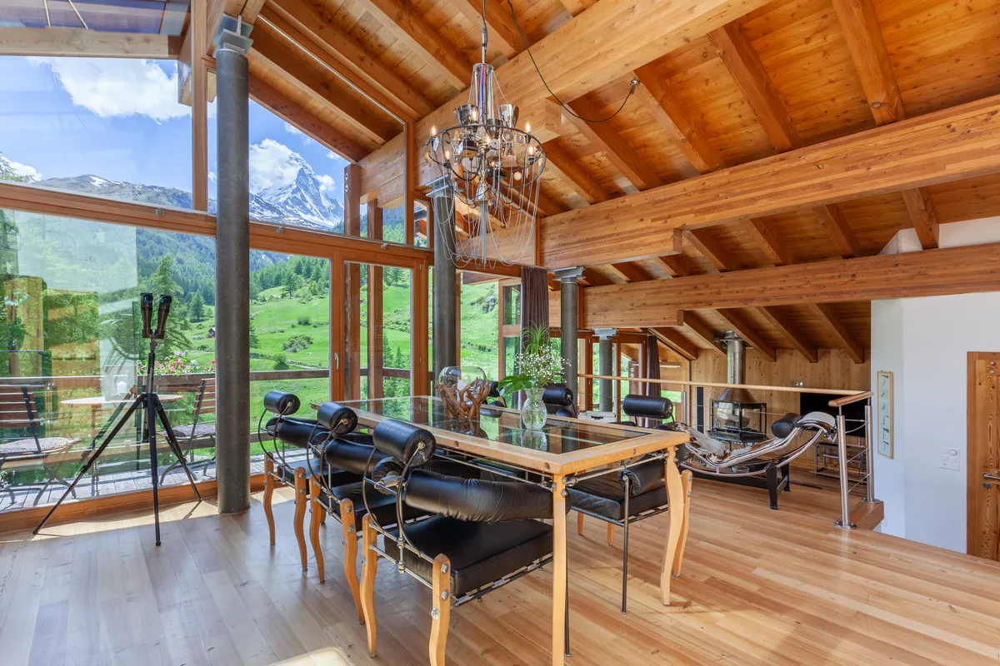
Ihr Frühstück, zur gewünschten Zeit.
Linie 1 px Silber · Radius 4 px · Strich in Pinsel-Rot
Anthrazit ist der Hauptweg, einmal je Fläche. Schnee mit Silberlinie ist jeder Nebenweg. Kein Knopf ist rot.
Muster im Hintergrund, Einkerbungen, Pillen-Reihen, Kreise als Schmuck, Tickets, Sticker, Leuchtschrift, grosse rote Flächen. Das Haus ist hell und klar wie ein Wintertag.
06Bilder
Gezeigt wird, was der Gast vorfindet: das Haus im Schnee und in der Dämmerung, die Suiten unter dem Lärchendach, der Balkon mit dem Matterhorn, das Frühstück in der Suite, Fondue auf dem Balkon, das warme Wasser draussen und die Familie, die das Haus führt. Alle Fotos kommen aus dem Material des Hauses.
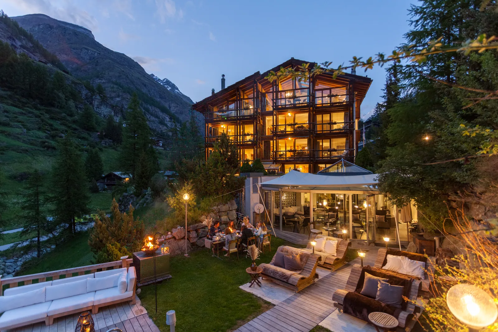
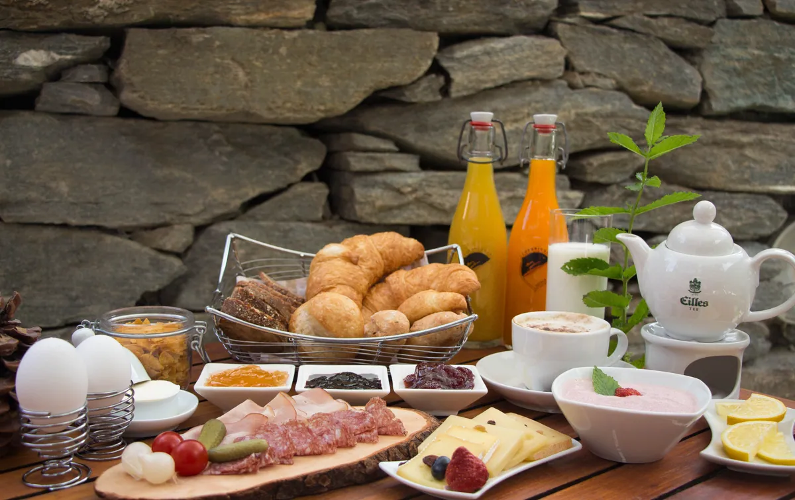
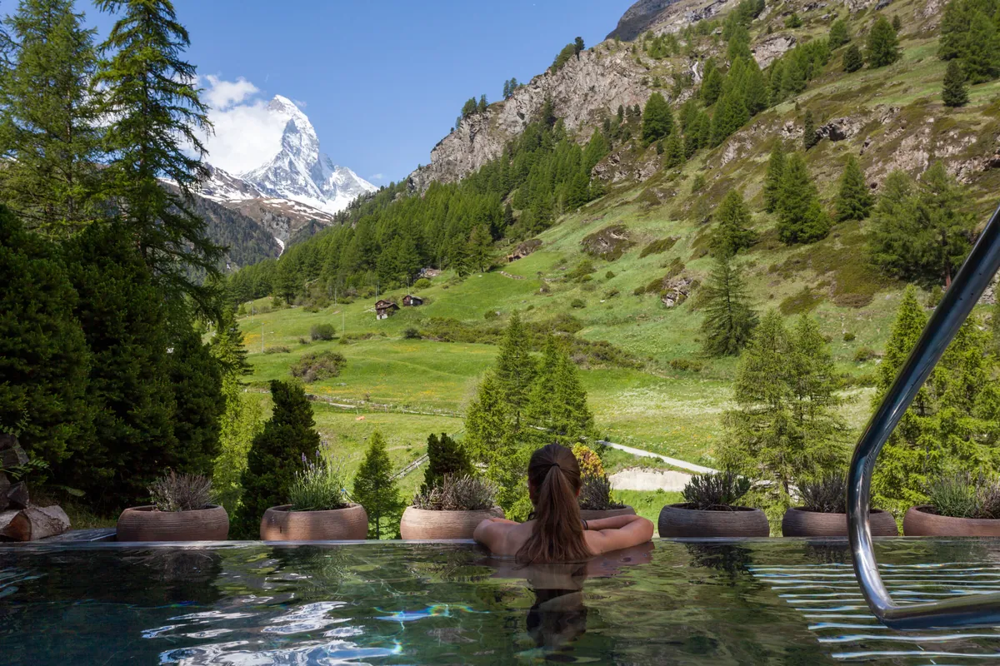
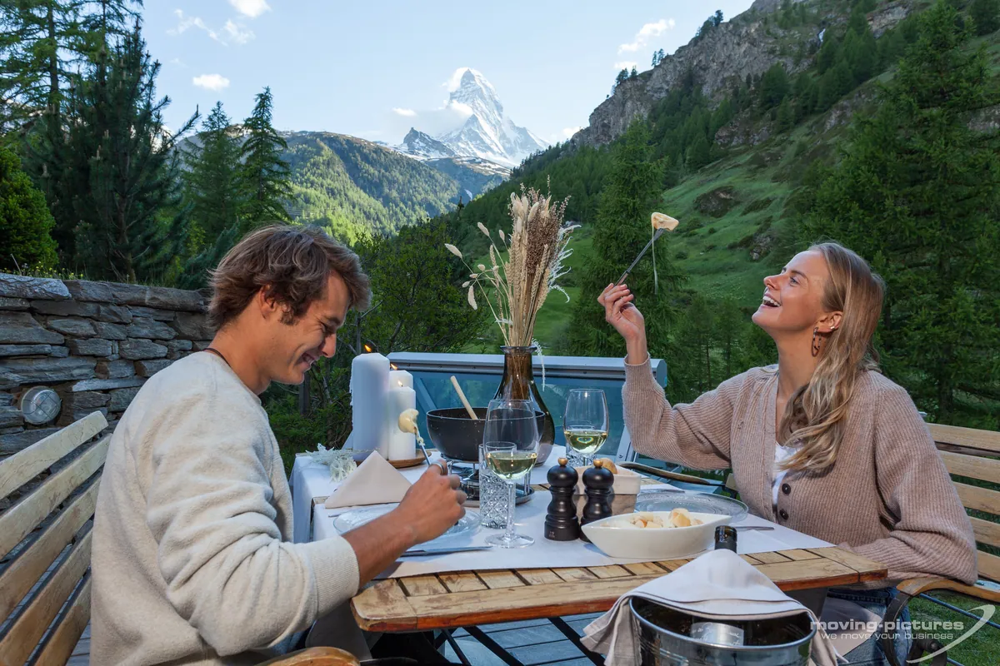
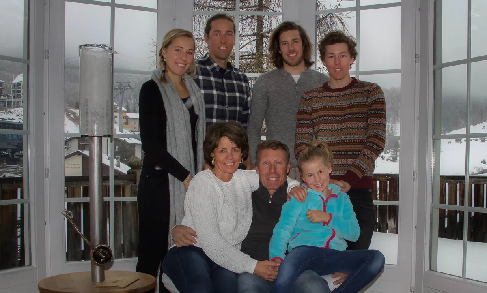
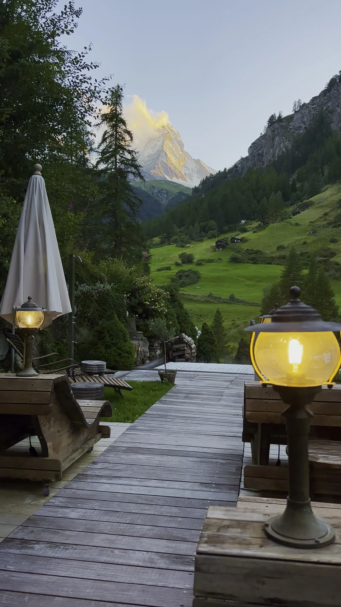
Mit viel Glas, einheimischem Lärchenholz und einer atemberaubenden Aussicht aufs Matterhorn bringen wir unseren Gästen die Natur ins Haus.
Aus der Website des Hauses.
07Die Suiten
Jede Suite trägt ihren Namen, der für sich spricht. Wo eine Suite genannt wird, steht sie so, wie das Haus sie nennt: der Name, die Schlafzimmer, die Gäste und die Fläche. Die Zahlen stehen in DM Mono, der Name in Instrument Sans.
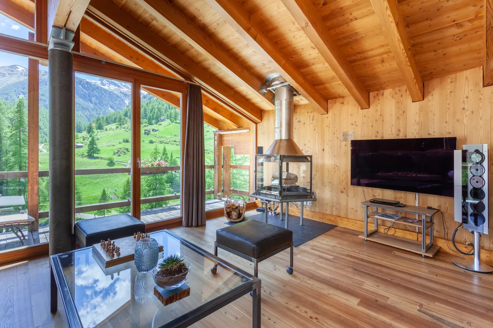
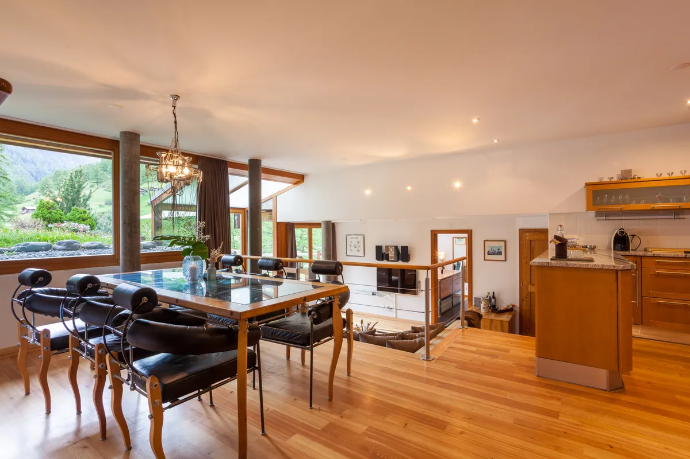
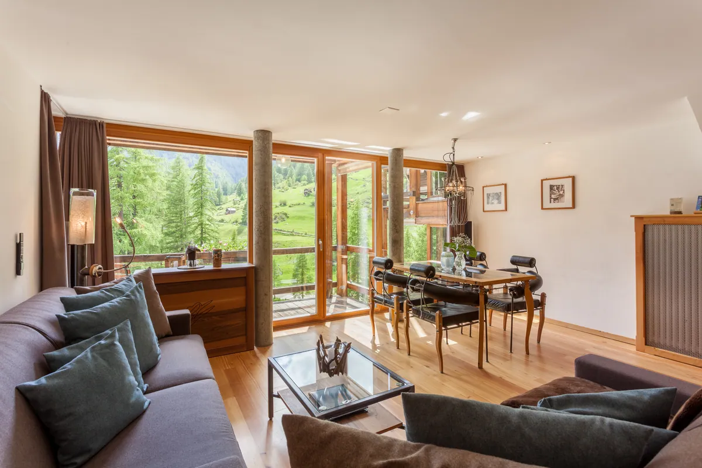
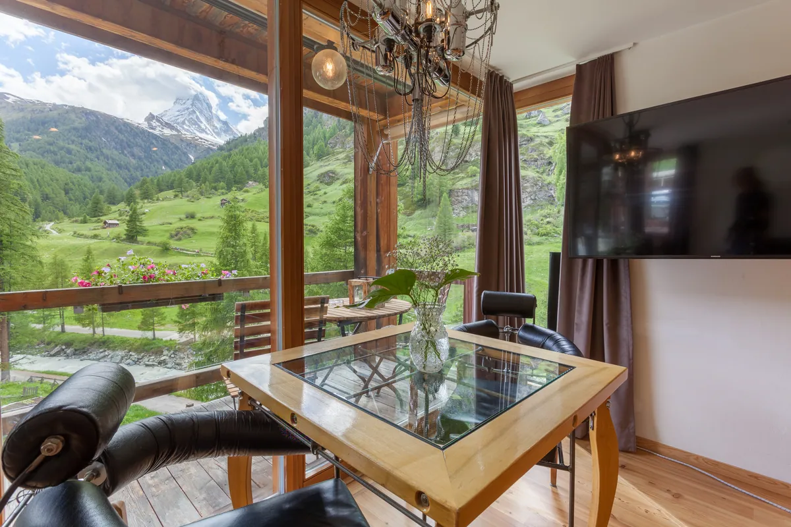
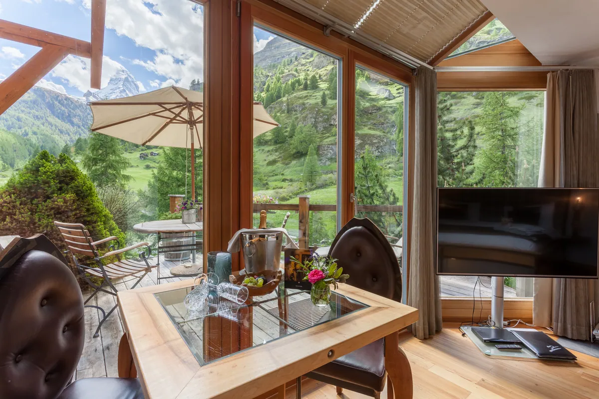
Dazu zwei Doppelzimmer, Deluxe und Standard, und das Chalet «Little Dream».
08Ton
Das Haus siezt seine Gäste und schreibt wie eine Familie, nicht wie ein Konzern: ruhig, herzlich, mit echten Angaben statt grosser Worte. Jeder Satz meint den einzelnen Gast. Geschrieben wird in Schweizer Schreibung: ss statt ß, Anführungszeichen als «Guillemets», Preise als CHF 29.–, Zeiten als 18.00 Uhr.